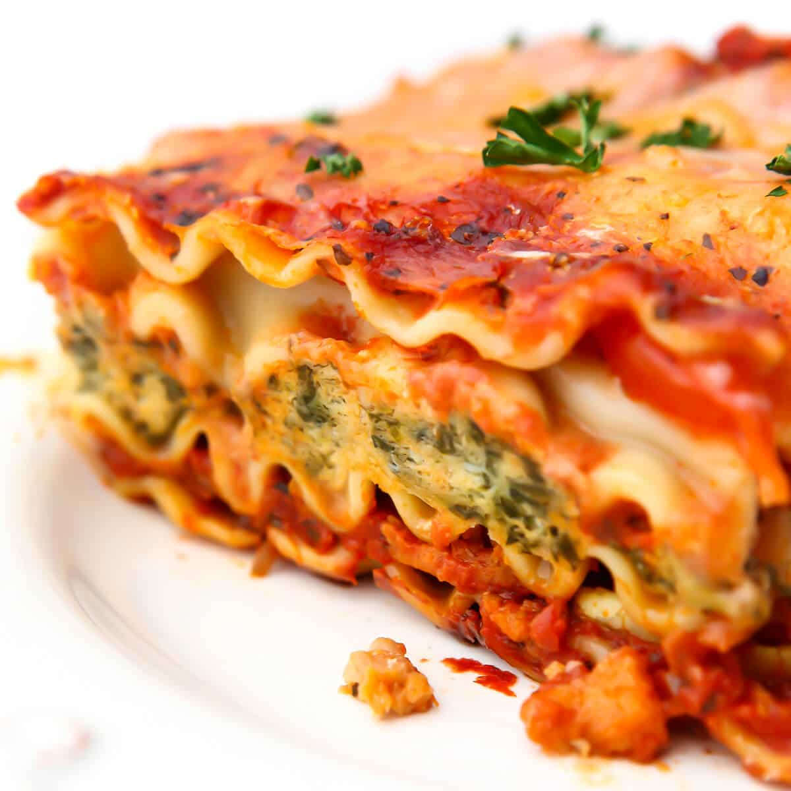

Vegan Lasagna

I've probably mentioned it several times by now: vegan lasagna is definitely one of my favorite dishes ever.
There are endless options for lasagna. You can prepare it with spinach, pesto, sweet potato, or even with thinnly sliced vegetable instead of using pasta sheets.
But I love to stick to the classic lasagna. In my go-to recipe, I only use onions and carrots (Isa likes to add celery, too), a flavorful tomato and minced soy meat layer
with some red wine (plus ketchup as a secret ingredient) and of course vegan béchamel sauce.
The latter isn't optional, please take this time to prepare it. It's easy, I promise!
Once the smell of lasagna is filling the air, it's a real challenge not to open the oven directly and eat the half-baked lasagna right away.
But no, this recipe requires patience, even after baking. Before serving, you should let the lasagna rest for 5 minutes. It will firm up and not fall apart when you cut it into pieces.
Ingredients
FOR THE SOY MEAT-TOMATO LAYER
- 150 g (5.5 oz) soy meat
- 1 l (4 cups) hot vegetable stock
- 1 onion
- 2 carrots
- 1 tbsp soy sauce
- 4 tbsp tomato purée
- 1 tbsp agave syrup
- 100 ml (0.5 cup) red wine
- 500 g (18 oz) canned dices tomatoes
- 2 tbsp ketchup
- 0.5 tsp dry basil
- 0.5 tsp dry oregano
- 0.25 tsp cayenne pepper
- 0.5 tsp paprika
- vegetable oil for frying
- salt
- pepper
FOR THE BÉCHAMEL SAUCE
- 3 tbsp all purpose flour
- 3 tbsp vegan butter
- 250 ml (1 cup) plantbased milk
- 1 tbsp nutritional yeast
- salt
- pepper
- nutmeg
ALSO
- vegan lasagne sheets
- vegan shredded cheese (optional)
Instructions
- For the tomato and soy meat layer, add dried soy meat to a bowl and pour over hot vegetable stock. Let it soak for approx. 10 - 15 minutes, then drain and squeeze out as much liquid as possible. Season generously with salt and pepper. Akternatively, you can also skip this step by using minced vegan soy meat or else that you can fry directly.
- While the dried soy meat is soaking, peel and finely dice an onion. Roughly grate the carrots, or also cut them into dices.
- Heat vegetable oil in a large frying pan over medium-high heat and sear soy meat for approx. 5 minutes until it's browned. Add soy sauce and keep frying for approx. 5 minutes.
- Add onion and carrots and fry over medium heat for 4-5 minutes. Add tomato purée and agave syrup, stir to combine and let it all simmer for approx. 3 minutes.
- Deglaze with vegan red wine and simmer for 5 minutes before adding canned tomatoes. Add ketchup and spices, and season with salt and pepper to taste. Let the sauce simmer over medium-low heat until the béchamel sauce is done.
- For the béchamel sauce, melt vegan butter in a small pot and stir in flour thoroughly, so it doesn't get clumpy. Heat for approx. 1-2 minutes over low heat, then add plantbased milk little by little. Always keep stirring as the sauce with thicken real fast and you want it to get silky. Season with nutritional yeast, salt, and pepper to taste. If your béchamel gets too thick, just add more plantbased milk.
- Preheat oven to 180°C/355°F. Get your baking dish ready. Start with a thin layer of your tomato and soy sauce, then cover it with dry lasagne sheets, another layer of the tomato sauce, and a layer of béchamel. Keep repeating with lasagna sheets, tomato sauce and béchamel until everythinf is used up and you end with a final layer of béchamel. If desired, you can add vegan grated cheese on top.
- Bake the lasagna at 180°C/355°F for approx. 40 mminutes, or until the lasagna sheets are soft. Remove from the oven, but let the lasagna rest for approx. 5 minutes before cutting it. This way, your layers will firm up.
return to mainpage